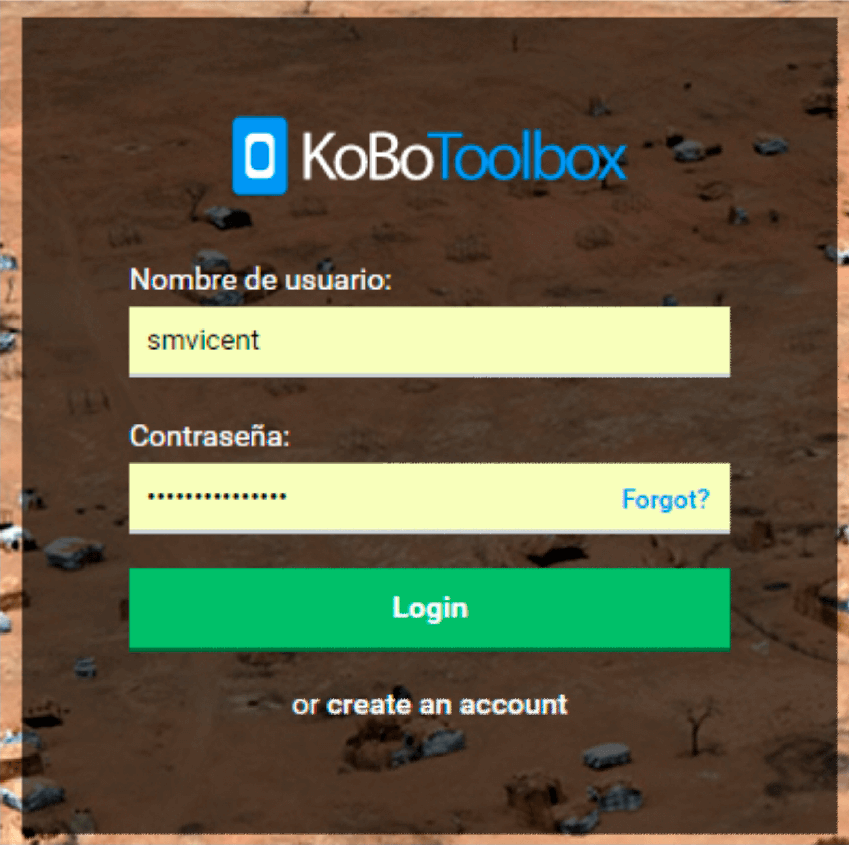
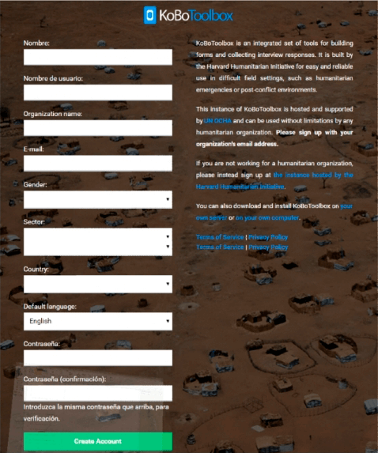

Guia N°4
Manual de Usuario del uso KOBO
Creando una cuenta en KOBO
KoboToolbox es la herramienta que vamos a utilizar para captura de datos en campo.
Nota: se recomienda acceder a Kobo utilizando el navegador Chrome
Una vez dentro, pulsar “create an account” (crear una cuenta)

Se deberán completar los datos del formulario que se muestra a continuación:

Carga y llenado del formulario.
Un formulario es el instrumento a través del cual los responsables de gestionar la información con la familia recopilan los datos que serán enviados al socio o socia.
El formulario es muy importante, dado que este instrumento representa una de las principales causas de incidencias, la veracidad y congruencia de la información posibilitará que la o el auspiciador este satisfecho y quiera seguir auspiciando un niño o niña.
Conociendo el formulario:
Desde la Oficina Nacional se ha creado un formulario con todos los campos de la ficha del niño, y adaptado para que pueda ser cargado en Salesforce con unas mínimas manipulaciones de los datos.
Los campos obligatorios a llenar son:
Una vez que está seguro o segura que la información es correcta, que tiene la mejor foto del niño o de la niña, que le ha tomado una fotografía al documento de nacimiento, que obtuvo la autorización para uso de la información, ha registrado la familia en la base de datos, etc. Procedemos a pinchar en “Validar”.
Esta opción es la que le permitirá enviar correctamente la información que posteriormente será procesada con SalesForece.
Instalación de la app en los móviles.
Cada ADT seguirá los pasos indicados en el “Manual de uso de KoboToolbox para la recolección de fichas”:
El usuario y la contraseña utilizados serán los propios de cada ADT. Para descargarse el formulario en la tablet/móvil sí que es necesario contar con acceso a internet, pero para el uso de la aplicación Kobo Collect y el GPS en campo NO es necesario contar con señal de internet.